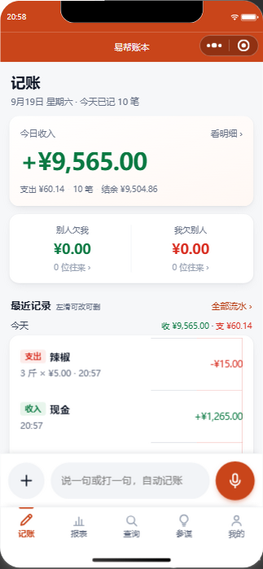
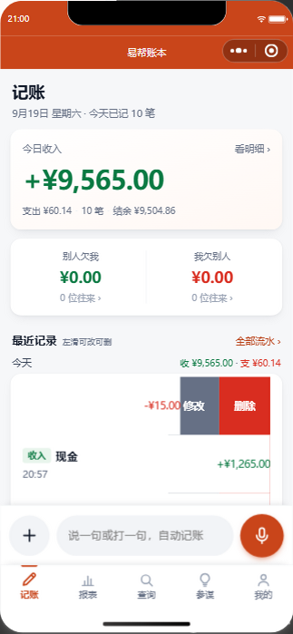
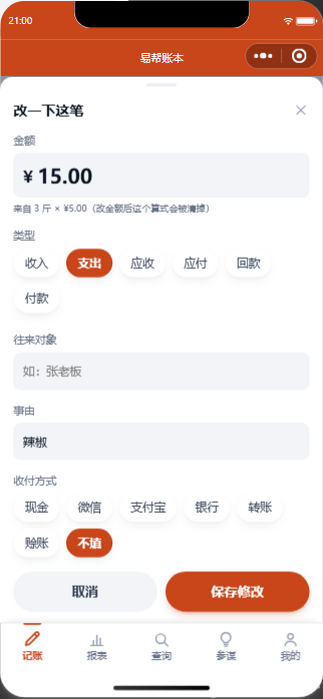
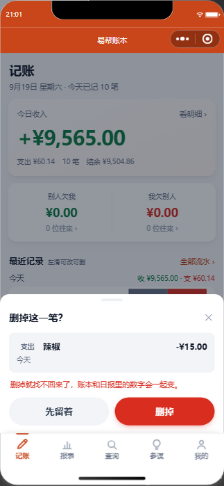

/record/ai-parse：
| 原话 | AI 当时给的 | 问题 |
|---|---|---|
| 辣椒3白，5块钱一斤 | amount=5，qty/price 都没有 | 把"5块钱一斤"当成总额，账少记 10 元 |
| 辣椒3包，5块钱一斤 | records 为空 | 只能追问金额，你只好自己填 |
| 辣椒300斤，5块钱一斤 | amount=1500 ✓ | 它算得对 |
| 今天收现金1265元 | contact=""、content="" | 列表显示「未填写事由」 |
| 做法 | 为什么 |
|---|---|
提示词要求模型把 qty / unit / unit_price 都输出 |
只给一个 amount，服务端就没有任何依据去核对对错。 |
服务端 reconcileAmount() 只在能证明模型漏乘时才改 |
三种可证伪的形状：amount 缺失/为 0；amount 正好等于单价且数量≠1；amount 正好等于数量。 刻意不做"和 数量×单价 差得远就覆盖"——你可能给了折后总价（「3 斤 5 块一斤，一共给了 14」），那样改就是把对的改错。 |
| 收付方式用确定性词表兜底，不问模型 | 现金/微信/支付宝/银行/转账/扫码/赊账 是封闭集合，一个正则比模型稳，还省钱。模型给了就用模型的。 |
| 明确禁止把方式填进往来对象 | 否则会凭空建出一个叫「现金」的客户。清理数据时核对过：没有生成。 |
存下 qty / unit / unit_price / pay_method 四个字段 |
只存一个算出来的金额，事后谁也不知道这钱怎么来的。数量和单价留下来，列表才能把算式摆出来。 |
{"amount":0,"qty":0,…}，
模型拿不准时就原样吐回来 —— 不报错、也不返回空数组，而是给一条"字段齐全但全是 0"的记录。
改成中文占位符 {"amount":金额,"qty":数量,…} 就好了。"method":"现金"，结果
「卖废铁收款300元」这种压根没提方式的也被冠上 method=现金。
修法是示例里"本例确实没有"的字段一律留空，需要演示时用散文写，不要写进 JSON 行。
金额下面多了一行算式
左滑露出
修改面板带算式提示
删除前把这条摘要| 项目 | 结果 |
|---|---|
| 语音归类回归（含 3 条防照抄反例） | 54 / 54 |
| 端到端：「辣椒3白，5块钱一斤」 | 回执「支出 ¥15.00 · 3 白 × ¥5.00 · 辣椒」 |
| 端到端：「今天收现金1265元」 | 回执「收入 ¥1,265.00 · 现金」 |
| 落库核对 | ¥15.00 / qty=3 / unit=白 / price=5 / content=辣椒；¥1265 / method=现金 |
| 左滑 → 修改 → 删除 | 模拟触摸全流程走通，删除后数据库确认已删 |
| 手势中途刷新列表（中断场景） | 不再误开任何行（修复前会） |
| 采购统计回归（确认没被改坏） | 13 / 13 |
| 静态自检 / WXML 配对 / 指令 / 样式括号 | 15 wxml 全过 · 16 wxss 配平 · 模拟器 console 无报错 |